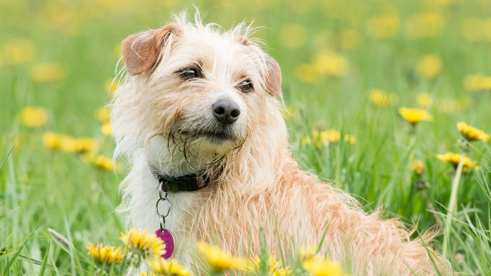

Veterinaria Moka
Blog
Junio 23 de 2022
Estudio confirma que los tiburones de Groenlandia son los vertebrados más longevos
Según un estudio de la revista Science, los tiburones de Groenlandia son los vertebrados más longevos conocidos en la Tierra. La especie del Atlántico norte probablemente vive un promedio de al menos 272 años.
Agosto 6 de 2022
Explotación de petróleo y gas en el Congo pone en riesgo a gorilas en peligro de extinción
El Gobierno de la República Democrática del Congo apuesta por poner en subasta los permisos para perforar los bloques de petróleo y gas que se encuentran dentro del Parque Nacional Virunga, que es santuario para gorilas en peligro
de extinción.
Noviembre 18 de 2022
Conoce el primer gimnasio para perros de Emiratos Árabes Unidos
Las personas suelen buscar lugares donde entrenar. Sin embargo, en Emiratos Árabes Unidos, ahora las mascotas también pueden hacerlo. Conoce el primer gimnasio para perros del país.
Diciembre 25 de 2022
Un biólogo encuentra un raro dragón de hielo dentro de un glaciar
El dragón de hielo patagónico vive en los glaciares y se cree que tiene un anticongelante natural en su sangre. Esta rara criatura está en peligro de extinción porque su hábitat se está derritiendo.

Saludar y acariciar a los perros: cómo hacerlo correctamente para que lo disfruten
Primero de todo, debemos tener el consentimiento del dueño del can para acercarnos y saludarle, ya que no sabemos qué clase de perro es, si sufre alguna enfermedad o dolencia o si simplemente está en proceso de socialización o adaptación.
Una vez hayamos pedido permiso, podremos proceder a acercarnos al animal.
Visitar Noticia

Cómo preparar a nuestro gato para acudir al veterinario sin estrés ni traumas
El primer consejo, sin duda, es el más extendido y popular: acostumbrar al gato a introducirse en su caja de viaje aun cuando no vayamos a usarla. Podemos ayudarles, si vemos que no les despierta mucho interés o incluso reaccionan
con desconfianza, introduciendo alguna golosina, comida húmeda o juguetes de la mascota.
Visitar Noticia